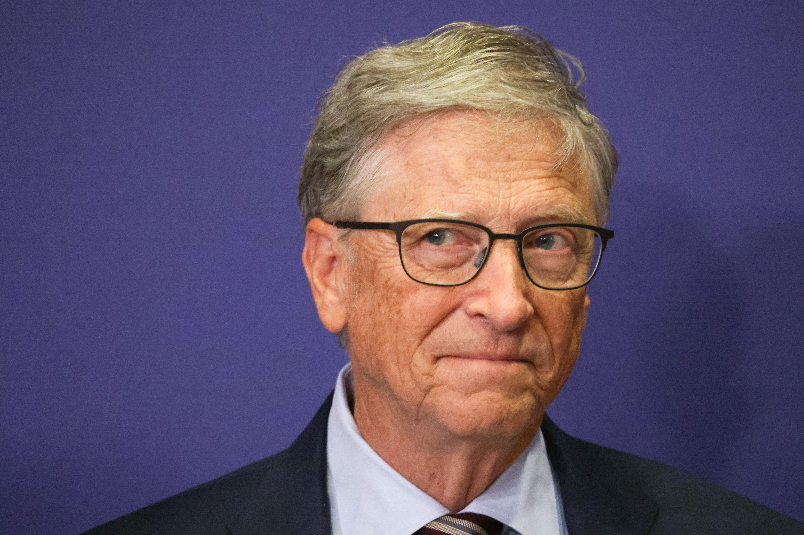
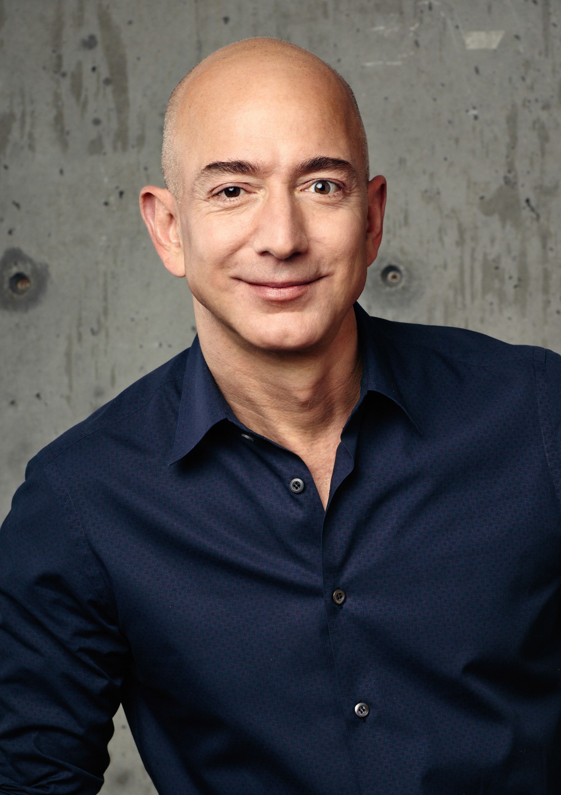

Bill Gates
Bill Gates, nacido el 28 de octubre de 1955 en Seattle, Washington, es un empresario y filántropo estadounidense. Es conocido principalmente por ser el cofundador de Microsoft Corporation, una de las empresas de tecnología más grandes y exitosas del mundo. Gates es reconocido por su papel pionero en la revolución de la computadora personal, liderando el desarrollo del sistema operativo MS-DOS y posteriormente Windows, que se convirtieron en estándares en la industria de la tecnología. Además de su éxito empresarial, Gates es conocido por su trabajo filantrópico a través de la Fundación Bill y Melinda Gates, donde se enfoca en áreas como la salud global, la educación y el desarrollo sostenible.

Mark Zuckerberg
Mark Zuckerberg, nacido el 14 de mayo de 1984 en White Plains, Nueva York, es un empresario y programador informático estadounidense. Es conocido mundialmente por ser el cofundador y CEO de Facebook, la red social más grande y popular del mundo. Desde una edad temprana, Zuckerberg mostró un interés notable por la programación y la informática. Mientras estudiaba en la Universidad de Harvard, creó una serie de programas de software que llamaron la atención de sus compañeros y profesores.

Steve Jobs
Steve Jobs, nacido el 24 de febrero de 1955 en San Francisco, California, fue un visionario empresario y cofundador de Apple Inc. Jobs es reconocido por su papel en la revolución de la tecnología y el diseño con productos icónicos como el iPhone, el iPad y el MacBook. Su enfoque en la innovación y la simplicidad llevó a Apple a convertirse en una de las empresas más exitosas del mundo. A lo largo de su carrera, Jobs inspiró a millones de personas con su pasión por la creatividad y el perfeccionismo en la industria tecnológica. Su legado perdura como un símbolo de visión y determinación en el mundo empresarial.

Daniel Ek
Daniel Ek, nacido el 21 de febrero de 1983 en Estocolmo, Suecia, es un empresario sueco conocido por ser el cofundador y CEO de Spotify, la plataforma líder de streaming de música. Desde su lanzamiento en 2006, Spotify ha revolucionado la forma en que las personas acceden y disfrutan de la música en todo el mundo, convirtiéndose en una de las empresas de tecnología más influyentes del siglo XXI. Ek es reconocido por su visión innovadora y su impacto en la industria musical moderna.
Jeff Bezos
Jeff Bezos nació el 12 de enero de 1964 en Albuquerque, Nuevo México. Estudió en la Universidad de Princeton, donde se graduó con honores en informática e ingeniería eléctrica. Después de trabajar en Wall Street, Bezos fundó Amazon en 1994 como una librería en línea desde su garaje en Seattle. Desde entonces, ha dirigido la expansión de la empresa para vender una amplia gama de productos y servicios, convirtiéndola en la gigante de comercio electrónico que conocemos hoy en día.

Michael Dell
Michael Dell, nacido el 23 de febrero de 1965 en Houston, Texas, es un empresario estadounidense conocido por fundar Dell Technologies en 1984, a la edad de 19 años. Su enfoque en la venta directa de computadoras fue clave para el éxito inicial de la compañía. Bajo su liderazgo, Dell se ha convertido en una de las principales empresas de tecnología del mundo, ofreciendo una amplia gama de productos y servicios. Además de su trabajo en Dell, Dell es conocido por su filantropía a través de la Fundación Michael y Susan Dell, establecida en 1999.

Larry Ellison
Larry Ellison, nacido el 17 de agosto de 1944 en Nueva York, es un empresario y filántropo estadounidense más conocido por ser el cofundador y ex CEO de Oracle Corporation, una de las compañías de software más importantes del mundo. Ellison creció en Chicago y mostró un interés temprano en la tecnología y la informática. Después de asistir a la Universidad de Illinois y a la Universidad de Chicago, abandonó sus estudios universitarios y se trasladó a California, donde comenzó su carrera en tecnología.
Andrés Moreno
Andrés Moreno, emprendedor colombiano, es reconocido como el fundador y CEO de Open English, una plataforma líder en enseñanza de inglés en línea. Nacido en Colombia, Moreno destacó desde temprana edad por su interés en la educación y la tecnología. Tras graduarse de la universidad, trabajó en varias empresas tecnológicas antes de lanzar Open English en 2007. La visión innovadora de Moreno ha revolucionado la manera en que millones de personas en América Latina aprenden inglés. Open English ofrece clases en vivo con instructores nativos las 24 horas del día, los 7 días de la semana, utilizando tecnología avanzada y métodos interactivos de enseñanza.
Jordi Muñoz
Jordi Muñoz es un emprendedor mexicano cuya vida y carrera han estado marcadas por la pasión por la tecnología y la innovación. Nacido en Ensenada, México, en 1985, Muñoz mostró un interés temprano por la electrónica y la ingeniería. Sin embargo, su camino hacia el emprendimiento comenzó de manera inesperada.

Freddy Vega
Freddy Vega es un emprendedor colombiano reconocido por ser cofundador y CEO de Platzi, una plataforma de educación en línea que ofrece cursos sobre tecnología y negocios. Nacido en Bogotá, Colombia, Vega mostró un gran interés por la tecnología desde joven. Después de trabajar en la industria tecnológica, cofundó Platzi en 2010 con el objetivo de proporcionar educación de calidad a través de internet. Bajo su liderazgo, Platzi se ha convertido en una plataforma líder en América Latina, ofreciendo cursos impartidos por expertos en áreas como desarrollo de software, diseño y marketing digital.